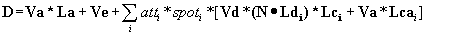
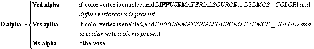

The output of the lighting stage is diffuse (D) and specular (S) colors in RGBA format. Lighting may be in one of two states:
1. Lighting Off (D3DRENDERSTATE_LIGHTING is set to FALSE). In this state the vertex color is computed as follows:
D3DRENDERSTATE_COLORVERTEX is ignored.
If the diffuse vertex color is present, the output diffuse color is equal to the vertex diffuse color. Otherwise, the diffuse color is equal to the default diffuse color (255,255,255,255). Output diffuse color is scaled and clamped to the range [0, 255].
If the specular vertex color is present, the output specular color is equal to the vertex specular color. Otherwise, the specular color is equal to the default specular (0,0,0,0). Output specular color is scaled and clamped to the range [0, 255].
2. Lighting On (D3DRENDERSTATE_LIGHTING is set to TRUE). In this state, Direct3D computes vertex colors according to the formulas below.
If normals are not present in the vertices, the part of the lighting equations that depends on dot product is set to zero. Lighting is still computed.
Lighting is done in the camera space.
alpha component is not used in the following lighting equations.

